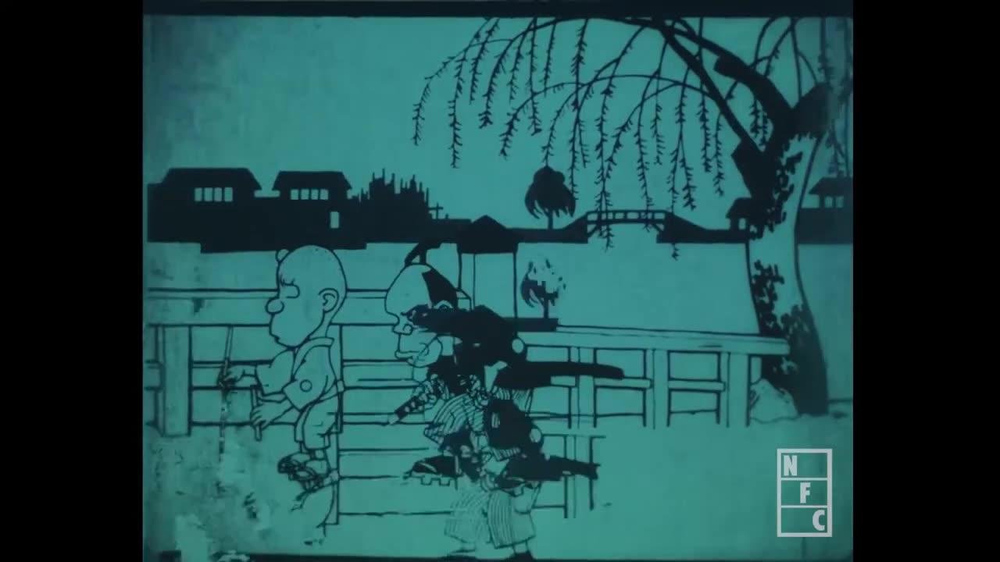
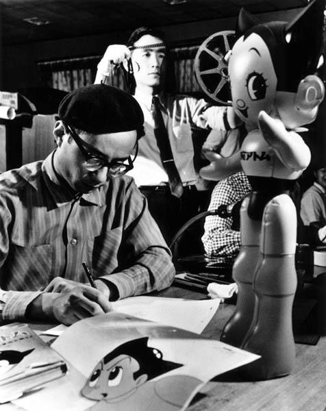
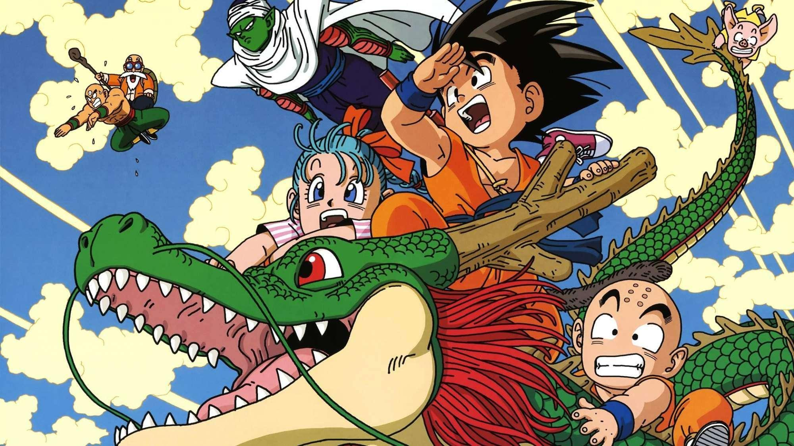
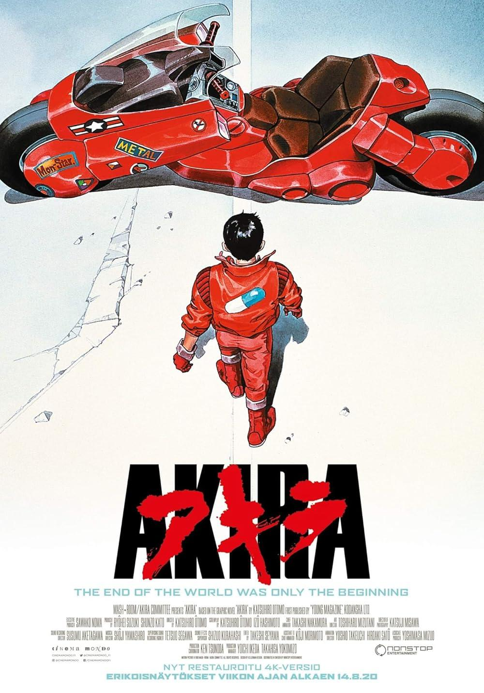
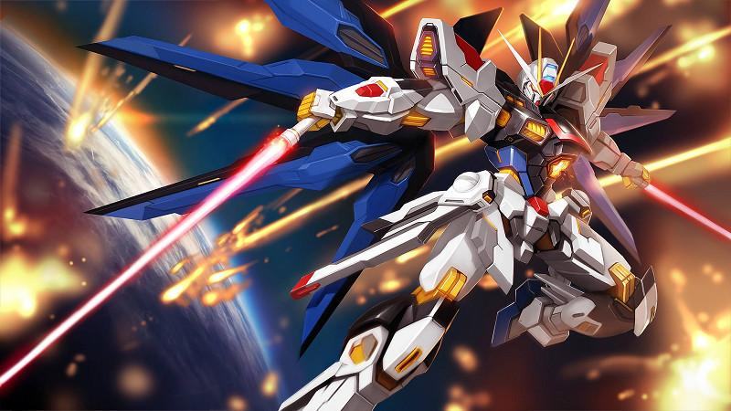
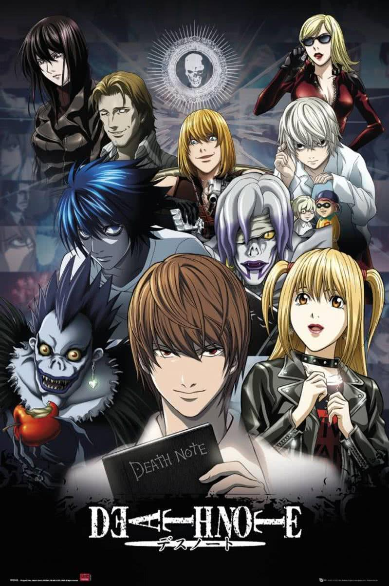
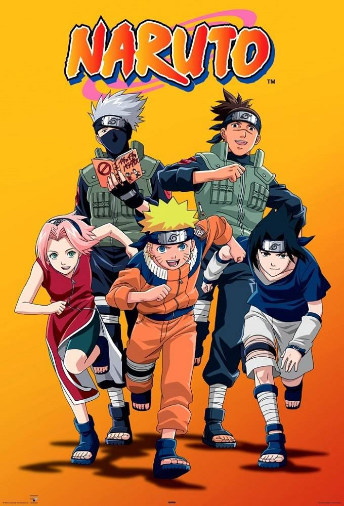
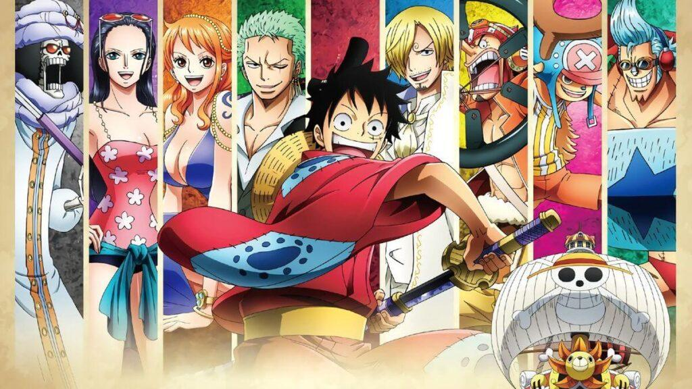
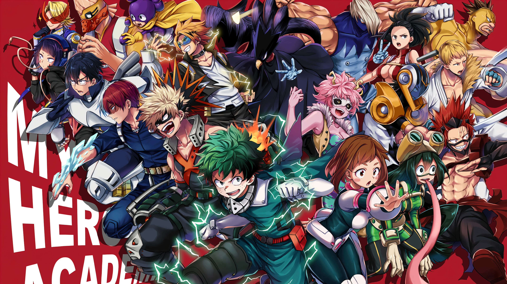

Anime là gì?
Anime là thuật ngữ dùng để chỉ các bộ phim hoạt hình được sản xuất tại Nhật Bản. Anime có phong cách vẽ đặc trưng, nội dung đa dạng từ hành động, tình cảm đến khoa học viễn tưởng, phù hợp với nhiều độ tuổi.
Lịch sử phát triển Anime
1. Giai đoạn khởi đầu (1910 – 1940)
Anime bắt đầu xuất hiện vào khoảng những năm 1910, khi các nghệ sĩ Nhật Bản thử nghiệm với hình thức hoạt hình chịu ảnh hưởng từ phương Tây (đặc biệt là Mỹ và Pháp). Những bộ phim anime đầu tiên thường rất ngắn, chỉ kéo dài vài phút và được vẽ hoàn toàn bằng tay.
Một trong những tác phẩm được xem là anime sớm nhất là “Namakura Gatana” (1917). Tuy nhiên, do điều kiện kỹ thuật còn hạn chế, phần lớn các tác phẩm thời kỳ này đã bị thất lạc.

2. Thời kỳ định hình (1950 – 1970)
Sau chiến tranh, ngành công nghiệp anime dần phục hồi và bước vào giai đoạn phát triển mạnh mẽ. Nhân vật quan trọng nhất trong thời kỳ này là Osamu Tezuka, thường được gọi là “cha đẻ của anime hiện đại”.
Năm 1963, ông tạo ra bộ anime truyền hình nổi tiếng “Astro Boy”.

Trong giai đoạn này, anime bắt đầu xuất hiện trên truyền hình, có nội dung đa dạng hơn (khoa học viễn tưởng, phiêu lưu…), hình thành các studio sản xuất chuyên nghiệp.
3. Thời kỳ phát triển mạnh (1980 – 1990)
Đây là giai đoạn anime bùng nổ về cả chất lượng lẫn số lượng.
Công nghệ vẽ tay đạt đến đỉnh cao, tạo ra những tác phẩm kinh điển.
Xuất hiện nhiều thể loại: hành động, mecha (robot), giả tưởng, kinh dị…
Nội dung ngày càng sâu sắc, hướng đến cả người lớn.
Anime không chỉ còn là giải trí trẻ em mà trở thành một hình thức nghệ thuật nghiêm túc.

Dragon Ball (1986) – phổ biến toàn cầu

Akira (1988) – mở ra chuẩn mực mới về chất lượng hình ảnh

Mobile Suit Gundam – định hình thể loại robot
4. Thời kỳ toàn cầu hóa (2000 – 2010)
Từ những năm 2000, anime bắt đầu lan rộng ra toàn thế giới
Anime trở thành một phần quan trọng của văn hóa đại chúng toàn cầu, ảnh hưởng đến: thời trang, game, âm nhạc, phim ảnh
Các bộ anime nổi tiếng toàn cầu:

Death Note (2006) – nổi tiếng với cốt truyện hấp dẫn và nhân vật phức tạp

Naruto (2002) – câu chuyện về ninja trẻ tuổi với ước mơ trở thành Hokage

One Piece (1999) – cuộc phiêu lưu của nhóm hải tặc tìm kiếm kho báu huyền thoại
5. Thời đại hiện đại (2010 – nay)
Ngày nay, anime tiếp tục phát triển mạnh mẽ với sự hỗ trợ của công nghệ số.
- Sự ra đời của các nền tảng streaming (Netflix, Crunchyroll) giúp anime tiếp cận khán giả toàn cầu dễ dàng hơn.
- Anime ngày càng đa dạng về thể loại và phong cách, phục vụ nhiều đối tượng khán giả khác nhau.
- Các bộ anime hiện đại thường có chất lượng hình ảnh cao, cốt truyện sâu sắc và nhân vật phức tạp.
Một số bộ anime nổi bật trong thời đại hiện đại:

Attack on Titan (2013) – nổi tiếng với cốt truyện căng thẳng và hình ảnh đậm chất kinh dị

My Hero Academia (2016) – câu chuyện về một thế giới nơi mọi người có siêu năng lực và một cậu bé không có năng lực nhưng vẫn mơ ước trở thành anh hùng